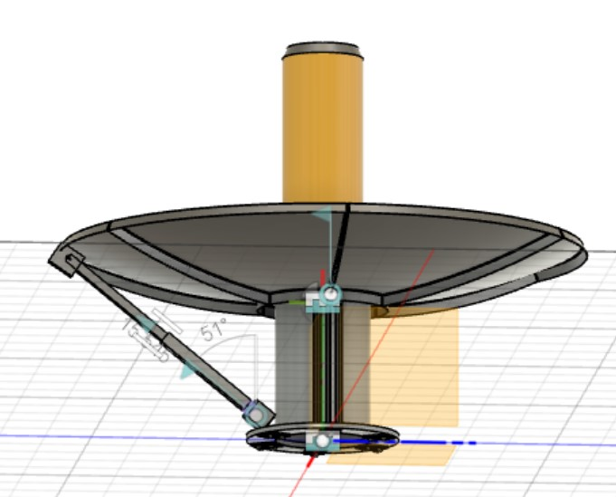
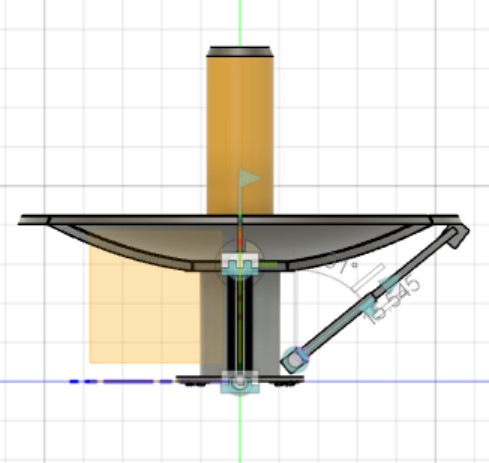
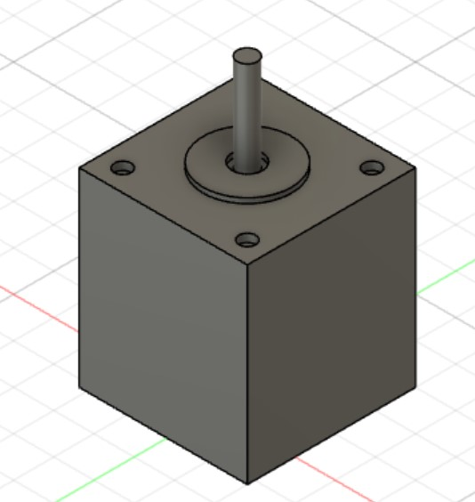

### Week 10: Sketching up in CAD
### Monday - 11/21: CAD Azimuthal Motion
We focused on designing the high-level movement and structure of our device in CAD. The goal of this step was to understand
potential dimensions of various parts as they fit together, identify potential obstacles to achieving the degrees of freedom in motion that we desired, and understanding
how our part of the project would fit into the overall structure of the solar cooker. We used a short rectangular post to simulate the hinge of the device which we connected
to the threaded rods, one on each end (as we need two hinges), with the revolve joint. Then we also use connected two square pipes together, one smaller than the other to
form our threaded rod. This sliding joint gave of the degree of motion we needed. At the base, the hinge was attached to the structure around the
reflector pipe. On the other end, the hinge was attached to the lip at the edge of the disk as this would give us a longer lever arm and allow us to move the disk more easily.
Our final design was able to move the device as we intended and it looked like this:


### Wednesday - 11/23:
On Wednesday, we discussed the various attachment points and more details on how we see them fitting together. In particular, we focused our
attention on how the lower rod would be attached to the motor and how the upper rod would rest on the nut. We decided that we would likely need to shop around
for a nut that would fit well within the extending tube. Then drilling holes through the sides of the extending tube, we would use set screws to fasten the
tube to the nut. At the base, the lower tube meant to constrain the motion of the extending tube would need to be fastened securely to the top of the stepper motor.
In discussing designs for this attachment, we realized we would likely want to CAD a piece we could attach to the stepper motor which would
allow us to secure the constraining tube. We decided to first CAD the dimensions of the stepper motor and we got to the following point:

Now our next step is to extrude a surface that matches the top of the motor and use that as the attachment.